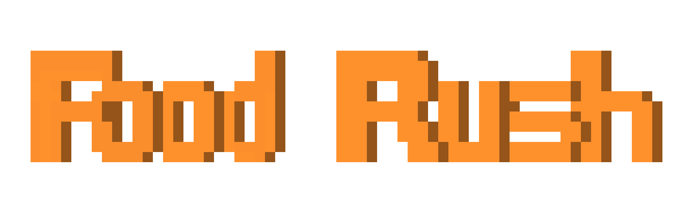

One Page Design Template
Name
Food Rush
Unique Selling Points
- alchemy like games, namun dengan tema makanan ditambah dengan genre adventure
- fast type game (live, die, repeat)
Theme + Mood
bertemakan Food survival, memiliki mood pada game yang memacu adrenalin player untuk berfikir cepat dan membuat keputusan dalam waktu singkat yang diimplementasikan ketika memikirkan recipe.
Control
- single character control game
- mengontrol karakter perempuan bernama aisha
- 4 direction control
- inventory button
- mengarahkan karakter ke resources yang ada pada tiap area untuk mendapat ingredients
- mengarahkan karakter ke rumah di area farm untuk transisi ke tampilan mengolah ingredients
Goal + Description
greatest goal atau biggest achievement dari game ini adalah ketika player berhasil membuka (unlock) semua recipe pada game ini (plan awal sekitar 50 - 100 recipe ketika rilis game). Side goal dari game ini adalah mendapat waktu terlama survive dan bersaing dalam greatest survivor (global leaderboard)
Core Mechanics
Pada game ini player akan memainkan karakter bernama aisha yang memiliki tujuan untuk mencari bahan makanan untuk diolah dan memakannya sebelum hunger bar habis. Bahan makanan pada game ini didapat dari resources(contoh: laut, pohon, sapi, dsb) yang ada pada area di dalam game ini. Game ini memiliki 4 area yaitu seashore, riverside, hills, dan farm yang juga merupakan rumah aisha dan tempat dimana aisha dapat mengolah bahan makanan(combine) yang juga jika tepat akan membuka(unlock) achievement/recipe. Ketika kalah dan mengulang dari awal recipe yang sudah didapat akan tetap ada.
Progression + Flow
- increasing number of recipe
- increasing area and resources
- adding another npc/enemies(maybe)
Aesthetic
Game ini dikemas dalam 8-bit style arts yang dinilai paling tepat untuk game ini dan disertai backsound dan sound effect.